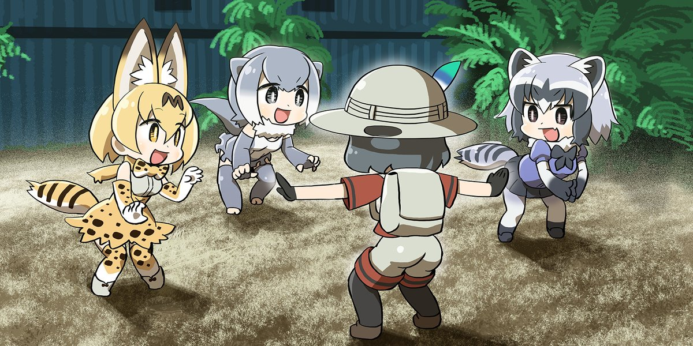
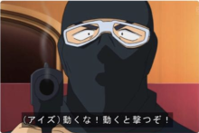
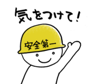
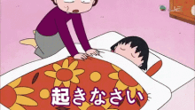
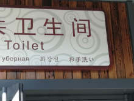

英会話この順序で覚えれば絶対だ
例文：纯享合集版
英会話この順序で覚えれば絶対だ[20191204] さがれ！[20191127] そのまま動くな！[20191126] 足元に気をつけて！[20191121] 気をつけて！[20191120] 危ない！[20191118] 傘をさしました。[20191116] 雪が降っています。[20191115] 曇っています。[20191113] 雨が降っています。[20191111] 晴れています。[20191110] 彼と会うのが楽しみだなあ。[20191106] 週末はどこかへ行きたいなあ。[20191104] 君のところに行くよ。[20191102] 今晩リサと遊びに行くんだ。[20191031] 遊びに行きたい！[20191030] 元気だよ、君は？[20191029] 元気？[20191028] やあ！[20191027] 起きなさい！[20191026] ゆうべ遅かったんです。[20191025] 眠い！[20191024] 目覚ましが鳴りました。[20191023] 目が覚めました。[20191022] お願いがあるのですが。[20191020] 手伝っていただけますか？[20191018] 手伝ってもらえますか？[20191017] ちょっとすみません。[20191016] お願いします。[20191015] 何か甘い食べ物が欲しい。[20191014] 何か食べ物が欲しい。[20191012] お腹がペコペコです。[20191011] のどが渇きました。[20191010] お腹がすきました。[20191009] すみません。お手洗いはどこですか。[20191007] 初めまして。私は __ です。
[20191204] さがれ！
さがれ！
退后！
Stand back! / Get back! / Back off!

| 单词 | 发音 |
|---|---|
| 下がる | さがる |
日语在发号施令的时候，需将命令动词变为命令形使用。
虽然生活中很少命令别人，但命令形在「紧急时刻」比如地震火灾呼喊大家快跑，或者「加油助威」比如看足球比赛让球员快跑，这种场合还是会经常使用的。
下がる这个词有向「下」移动和向「后」移动两种意思。
下がる这个词是第１类动词，第１类动词变命令形，需将该动词的ます形去ます后，再将末尾假名变到え段即可。
比如下がる变ます形是下がります，去掉ます后剩下がり，末尾假名り对应的え段假名是れ，即再把り变成れ即可，也就是下がれ！意思就是命令他人退后，注意要读出命令的口气。
注意：当你用输入法打さがる的时候会出现退がる候选词，但是退がる这个汉字是错误的，日语里さがる的正确当用汉字只有下がる。虽然退がる明显更符合退后的含义，之所以现在不用这个字可能有历史和规范的原因我们不深究，记住要么只写假名さがる，写汉字的话就写下がる即可。
[20191127] そのまま動くな！
そのまま動くな！
待着别动！
Hold it!

| 单词 | 发音 |
|---|---|
| 其の儘 | そのまま |
| 動く | うごく |
その，意思是那个。まま，意思是状态。そのまま，那个状态。日语汉字写作「其の儘」，一般只写假名。古汉语中「其」就是「那个」的意思；儘就是尽，逝者如斯、万物消尽，所谓自然流转，用以指代状态。
動く，动词，意思是动，泛指有所动作、行动。
日语表达禁止命令的方法是在动词原形后面+な，这种动词变形也被称为禁止形，也就是禁止…、不许… 做某事的意思。比如食べる是吃，食べるな就是不许吃的意思。
そのまま，就是保持原样。動くな，就是不许动。连在一起，直译就是保持原样不许动；为了增强禁止形的气势，我们意译为待着别动！
[20191126] 足元に気をつけて！
足元に気をつけて！
留神脚下！
Watch your step!
手元に気をつけて！
手上加小心！
Watch your fingers!
頭の上に気をつけて！
当心头顶！
Watch your head!

| 单词 | 发音 |
|---|---|
| 足 | あし |
| 手 | て |
| 元 | もと |
| 頭 | あたま |
| 上 | うえ |
元（もと）有开始的意思，且古代与圆通用。无论是足元还是手元，都是指从足或手开始周边一圈儿的范围，理解为脚下、手边。
上（うえ）就是汉语上的意思，头的上面不就是头顶么。
以上这三句话可以根据情境理解为「小心地滑」「当心台阶」、「当心夹手」「当心烫手」和「小心碰头」「当心头顶」等。
[20191121] 気をつけて！
気をつけて！
加小心！
Be careful.

| 单词 | 发音 |
|---|---|
| 気 | き |
| 付ける・着ける・漬ける・点ける | つける |
気是只有东亚文明才能理解的一种概念，一种虚无的能量，它发挥作用时又能化生实体。很玄！日语里和気有关的说法不胜枚举，但意思却都是只可意会不可言传的，不能理解的话就先死记住，直到将来有一天能理解它或者不在乎它。
つける是日语中另一个很玄的概念，汉语中的粘、连、黏、随，乃至接触、靠近、浸透、腌制等等意象，都可以用つける来表达。故而，つける的日语当用汉字有很多写法，不一而足。所以，日本人为了避免用字不准，一般也都只写平假名。
那么，気を付ける的意思就是「粘上气」。
我们把动词变成て形+ください，就可以表达请做某事。
比如気をつけてください就是「请粘上气」，而它真正的意思是「请小心一点儿」。我特别喜欢我姥爷的说法，每次我骑车上学他都会嘱咐我「加小心！」，这个「加」字把つける这个词翻译得真好。
另外，つける是二类动词，变て形去掉る（ます）直接加て即可。
[20191120] 危ない！
危ない！
危险！
Watch out! / Look out!

| 单词 | 发音 |
|---|---|
| 危ない | あぶない |
危ない是形容词，危险的。常用在遭遇惊险的时候大声喊出。
注意：ない并不是表达否定的那个ない，危ない是一个词，い结尾的い形容词。
[20191118] 傘をさしました。
傘をさしました。
撑起了雨伞。
I put up my umbrella.
傘を閉じました。
合上了雨伞。
I closed my umbrella.

| 单词 | 发音 |
|---|---|
| 傘 | かさ |
| 差す | さす |
| 閉じる | とじる |
傘，名词，伞。注意写法。
差す，动词，撑开。你看差的羊字头，像不像什么东西撑开的样子。
閉じる，动词，合上。本意是闭合以恢复原样。
[20191116] 雪が降っています。
雪が降っています。
正在下雪。

| 单词 | 发音 |
|---|---|
| 雪 | ゆき |
| 降る | ふる |
[20191115] 曇っています。
曇っています。
正阴天。

| 单词 | 发音 |
|---|---|
| 曇る | くもる |
[20191113] 雨が降っています。
雨が降っています。
正在下雨。

| 单词 | 发音 |
|---|---|
| 雨 | あめ |
| 降る | ふる |
降る是「一类动词」，意思是降落。
动词变现在进行时，先变て形，再加いる。
变て形先变ます形，去掉ます，末尾假名是いちり，则变促音加て。口诀：いちり、促音变。降り，末尾是り，符合规则。
降る => 降ります => 降り => 降って => 降っている。
为了更加礼貌，いる再变います，即简体变ます形。
降っている => 降っています。
主语是雨，直译是雨正下着，意译为正在下雨。
[20191111] 晴れています。
晴れています。
正晴。

| 单词 | 发音 |
|---|---|
| 晴れる | はれる |
晴れる是自动词，放晴、晴朗的意思。
日语动词变て形+いる，表示动作的现在进行时。
晴れる是二类动词，变て形直接在ます形去掉ます的基础上加て即可。晴れる、晴れます、晴れて。
晴れている是简体形式，变成ます更加礼貌，即晴れています。天空、天气也好，今天、现在也罢，主语省略了，表达的意思就是正晴着呢。
[20191110] 彼と会うのが楽しみだなあ。
彼と会うのが楽しみだなあ。
我好期待和他见面啊。

| 单词 | 发音 |
|---|---|
| 彼 | かれ |
| 会う | あう |
| 楽しみ | たのしみ |
彼是男「他」的意思。
会う是见面，所谓相会。
彼と会う，和他见面。
动词原形+の变名词，彼と会うの，和他见面这件事儿。
が，提示前方部分是主语。和他见面这件事儿怎么了？
楽しみです。楽しみ是期待的意思，名词，对于将来可能开心快乐的事情的一种期待。
です简体化变だ，なあ是语气助词。
[20191106] 週末はどこかへ行きたいなあ。
週末はどこかへ行きたいなあ。
周末好想去什么地方玩儿啊。

| 单词 | 发音 |
|---|---|
| 週末 | しゅうまつ |
どこ，疑问词，哪里。
疑问词+か＝不确定，表达一种不确定的语气，不确定是哪里，反正是个地方。
へ，助词，表示动作的方向。どこかへ，向着不确定是哪里的地方。
行きたい，想去。なあ，语气助词，常常跟在たい后面表达「好想……啊〜」这种感情。
[20191104] 君のところに行くよ。
君のところに行くよ。
我（这就）去你那儿啦。

| 单词 | 发音 |
|---|---|
| 所・処 | ところ |
ところ的意思是地方，空间概念。
名词和名词之间加の，表示「的」。
君のところ，你的地方，亦即你所在的地方。
よ，语气助词，表示提醒语气。
[20191102] 今晩リサと遊びに行くんだ。
今晩リサと遊びに行くんだ。
我今天晚上和丽莎去玩儿。

| 单词 | 发音 |
|---|---|
| 今晩 | こんばん |
助词と，跟在名词后面，表示和谁、和什么。
リサと，和丽莎。
行くのです。强调语气。
の口语简读为ん，です变简体为だ，行くんだ。
[20191031] 遊びに行きたい！
遊びに行きたい！
想去玩儿！
| 单词 | 发音 |
|---|---|
| 遊ぶ | あそぶ |
| 遊びます | あそびます |
| 行く | いく |
| 行きます | いきます |
表达想要做某事，将动词变ます形去掉ます加たい。行く是去的意思，行きたい就是想去的意思。
助词に的本质是「点」，是目的、目标的感觉。想去做什么，这个做什么就是去的目的、目标。首先将表达「做什么」的动词变成ます形去掉ます，然后加に就变成了目的、目标的表达。再接行きたい，就是想去做什么。
单纯的遊びたい是想玩儿，而遊びに行きたい是想去玩儿，注意体会。
[20191030] 元気だよ、君は？
元気だよ、君は？
我挺好呀，你呢？

| 单词 | 发音 |
|---|---|
| 元気 | げんき |
| 君 | きみ |
君单独用作人称代词，意思是你。但这种说法稍显轻浮，只能对同辈或晚辈使用，对上级或长辈不能使用。
另一种用法是代替さん做称谓词，称呼男性下属或晚辈为某君，比如山田君，此时君读作くん。
[20191029] 元気？
元気？
过得还好吗？（你好吗？）
| 单词 | 发音 |
|---|---|
| 元気 | げんき |
（讲解亡佚，有缘再续）
[20191028] やあ！
やあ！
（讲解亡佚，有缘再续）
[20191027] 起きなさい！
起きなさい！

（讲解亡佚，有缘再续）
[20191026] ゆうべ遅かったんです。
ゆうべ遅かったんです。

（讲解亡佚，有缘再续）
[20191025] 眠い！
眠い！

（讲解亡佚，有缘再续）
[20191024] 目覚ましが鳴りました。
目覚ましが鳴りました。

（讲解亡佚，有缘再续）
[20191023] 目が覚めました。
目が覚めました。

（讲解亡佚，有缘再续）
[20191022] お願いがあるのですが。
お願いがあるのですが。

（讲解亡佚，有缘再续）
[20191020] 手伝っていただけますか？
手伝っていただけますか？

（讲解亡佚，有缘再续）
[20191018] 手伝ってもらえますか？
手伝ってもらえますか？

（讲解亡佚，有缘再续）
[20191017] ちょっとすみません。
ちょっとすみません。

（讲解亡佚，有缘再续）
[20191016] お願いします。
お願いします。

（讲解亡佚，有缘再续）
[20191015] 何か甘い食べ物が欲しい。
何か甘い食べ物が欲しい。
何か冷たい飲み物が欲しい。
（讲解亡佚，有缘再续）
[20191014] 何か食べ物が欲しい。
何か食べ物が欲しい。
（讲解亡佚，有缘再续）
[20191012] お腹がペコペコです。
お腹がペコペコです。

（讲解亡佚，有缘再续）
[20191011] のどが渇きました。
のどが渇きました。

（讲解亡佚，有缘再续）
[20191010] お腹がすきました。
お腹がすきました。

（讲解亡佚，有缘再续）
[20191009] すみません。お手洗いはどこですか。
すみません。お手洗いはどこですか。

（讲解亡佚，有缘再续）
[20191007] 初めまして。私は __ です。
初めまして。私は __ です。中国から来ました。どうぞよろしく。
（讲解亡佚，有缘再续）